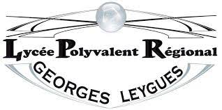

Guillaume RIZZO
Développeur Web
Je suis un développeur web front, mais cela ne m’empêche pas de m’intéresser à la partie back pour parfaire mes connaissances.
Cela ne change pas le fait que je soi rêveur et réservé. Mais je sais sortir de ma bulle pour aller
aider une personne dans le
besoin.
J'aime l'histoire, et plus précisément la période médiévale que les historiens situent
entre le Ve et XVe siècle.
J'ai commencé à aimer cette époque historique quand j'étais enfant. Au début, j'étais émerveillé par les armures de chevalier et les châteaux puis en grandissant, j'ai également développé un intérêt pour les musiques et l'histoire dans sa globalité, tout en gardant mon âme d'enfant.
Téléchargez mon CVCompétences


L'écoute
J'ai toujours trouvé que l'écoute était indispensable, que ce soit dans notre vie privée ou au travail.
En écoutant attentivement, nous pouvons mieux comprendre les sentiments et besoins des gens qui nous entoures.
Être à l’écoute des gens qui entourent m’a déjà permis lors d’anniversaires ou de fêtes d’offrir des cadeaux plus adaptés à chacun.
Cela m’a déjà permis de mieux comprendre les attentes de clients ce qui permet de mieux les retranscrire avec des maquettes.
Le Maquettage
On entend souvent l’expression « Une image vaut mille mots », c'est d'autant plus vrai et important pour un client ou les membres d'une équipe.
Durant ma formation, c’est quelque chose qui était souvent répété, j’avais compris que c’était important, mais je n’imaginais pas à quel point jusqu’à ce que je commence à travailler en entreprise.
Durant mon alternance, j’ai dû réaliser une maquette pour le projet
Ca a été le première fois que j'ai dû travailler avec l'outil Figma.
Travail en équipe
C’est bien connu « Tout seul, on va plus vite, ensemble, on va plus loin. ».
C’est pourquoi il est important de comprendre les rôles de chaque membre, faire preuve d’écoute, car chaque personne possède sa propre imagination de ce fait de nouvelles idées peuvent émerger pour avancer plus vite, et même transmettre des connaissances.
J’ai déjà eu l’occasion de travailler en équipe sur différents projets, comme DataCress, ou Start.in'tech.
Bien que la communication ne soit pas mon fort, je continue de m’améliorer afin d’avoir une meilleure synergie dans l’équipe.
Développement web
Le développement de sites web avec ReactJS c’est facile.
J’ai déjà eu l’occasion de travailler sur la réalisation de site web, mais dès le début de mon stage, j’ai découvert ReactJs et je dois dire que c’est impressionnant.
Avec React, on peut travailler plus rapidement puisque qu’il est question de créer des composants indépendants et réutilisables. C'est facile à apprendre puisqu’il suffit de connaître l’HTML, CSS et bien sûr le JS même si ce n’est que la face émergée de l’iceberg, il a une large communauté active et une documentation complète.
Je l’ai notamment utilisé pour développer
Bien qu’il me reste des subtilités du langage à apprendre, je vais continuer de travailler afin d’être à mon tour une personne que l’on vient voir en cas de besoin comme on l’a été pour moi.
SQL
SQL pour Structured Query Language est un langage de programmation utilisé pour gérer des bases de données relationnelles. Il permet de stocker, récupérer et manipuler des données dans une base de données.
J’ai découvert le SQL lors du développement du projet
Actuellement, je peux réaliser des requêtes simples rapidement et quand il faut en faire des plus complexes, j’y arrive, mais il me faut plus de temps. Avec le temps et plus de pratique, j’aimerais pouvoir travailler sur des requêtes qui demandent de la réflexion et toujours trouver du plaisir à le faire.
La patience
Pour moi, la patience est très importante. C'est une qualité qui nous aide pour faire face aux défis et aux obstacles de la vie avec sérénité et calme. La patience nous permet d'attendre sans nous énerver et de ne pas abandonner lorsque les choses ne se passent pas comme prévu.
Cette compétence est particulièrement utile dans les situations stressantes, comme le travail, les relations personnelles et les situations financières difficiles. Avoir de la patience nous aide à garder notre calme et à trouver des solutions à nos problèmes sans nous épuiser ou nous faire du mal.
Pour moi, c’est d’autant plus important en développent puisque c’est un domaine où l’on nous demande de travailler vite et bien, mais pour y arriver, il est préférable de réfléchir calmement pour bien cerner les enjeux ou problèmes potentiels. Et pour y arriver cela passe selon moi par l'écoute.
Je le vois bien grâce à mon entourage que dans le travail ou même la vie de tous les jours qu’il faut faire preuve de patience. Nous n’avons pas tous la chance d’avoir une équipe ou tout le monde s’entend bien.

Parcours
-
2023
-
Mars
Expertise Ingénierie Logiciel

Titre certifié niveau 7
Inscrit RNCP
IN'TECH du groupe ESIEAIvry-sur-Seine
-
2021
-
Bachelor en développement logiciel
Septembre 2018 à Mars
Titre certifié niveau 7
Inscrit RNCP
IN'TECH du groupe ESIEAIvry-sur-Seine
-
2020
-
Septembre à Mars 2023
Développeur Web
-
Niveau BTS CGA
2016
Lycée Georges Leygues
Villeneuve-sur-Lot